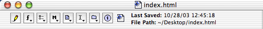
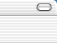
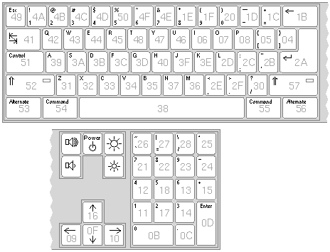

|  |  |
NeXT keyboard busNeXT computer's non-adb bus hardware has been an annoyance for sometime to everyone whom is without documentation. This makes everyone. I dedicate this work to Dan Moore's pile of NeXTStations; thanks again for the NeXT to probe. Disclaimer: I can guarantee none of this information to be correct. These are my initial findings (as of 16 DEC 2003), and I won't bother to update this again until my playing is complete. It only took me a day of playing to be able to use the keyboard to send signals to my Mac via my USB board. I've also gotten the NeXT to accept emulated keyboard codes. Hardware Overview
A serial signal of a partially unknown protocol comes from the NeXT and returns to the NeXT.
The board has some OP-AMPS for the MIC input and DAC. The board also has a regulator which
yields +5V for the keyboard/mouse combination. The serial signals are all a +5V potential from
GND. The serial signal enters a custom ASIC made by Motorola (XC38LG002PR01 made in the 13th week of 1990).
Monitor Bus Overview
The monitor bus connects the either the monitor or the sound-box to the NeXTStation. This bus
includes +12V and -12V The serial clock for this bus is 20Mhz. The data signal potential is
+5V.
___ __ _ _ _ ___ _
| |___| |____| |___________| |_______| |_| |__| |
3 3 2 4 1 11 1 7 1 1 3 2 1
^ ^
---key code---
msb lsb
The last 8-bits are the key-code. I believe the msb to be a marker-bit of sorts, because if you drop it you get the expected key code.
Here is a partial list of key encodings. One can extrapolate the rest by looking at the key encoding vectors."a" 10111001 0xB9 (0x39)(see above timing example) "s" 10111010 0xBA (0x3A) "d" 10111011 0xBB (0x3B) "f" 10111100 0xBC (0x3C)One should note that the key-codes which I determined correlate exactly to the key-map from the NeXTStep 3.3 developer documentation if the msb is indeed a marker-bit. (graphic below from channelu.com)  Input Bus: Mouse First, you must be aware that I have a spectacularly broken mouse. Only the left mouse button, and the vertical vectoring work; however, I still acquired useful information from the mouse. I initially thought this would be fine, but I couldn't even short the switch into functionality; so it goes. Again, the timing value of each "_" character is 200nS. Mouse up: ___ __ _ _ _ | |___| |________| |______________| |_______| | 3 3 2 8 1 15 1 7 1 Mouse down: ___ __ _ _ | |___| |________| |______________| |_________ 3 3 2 8 1 15 1 8 Scroll up: ___ __ _ ________ _ | |___| |________| |_______| |_______| | 3 3 2 8 1 7 8 7 1 Scroll down: ___ __ _ __ _ | |___| |________| |______________| |_______| | 3 3 2 8 1 14 2 7 1 Input Bus: Microphone Not yet finished. Keyboard Bus Overview
The keyboard bus consists of 5 wires: GND, +5V, power on, serial in, serial out. ____________ __ ____________
|__________| |___________|
12 10 2 10 12
Unlike the monitor bus, bits are placed on the bus lsb first. For example, the key coding for
"a" is 0x39, which follows below. "*" denotes a start/stop bit.
0x39 "a": ____________ _ ___ _ _ _ ____________
|_| |__| |_| |_| |_________| |_|
12 1 1 2 3 1 1 1 1 9 1 1 12
* 1 00 111 0 1 0 1
If you turn around binary 10011101, you get 10111001, which is 0xB9; drop the MSB, you get 0x39 which is our key board "a".
0x3B "d": ____________ __ ___ _ _ _ ____________
|_| |_| |_| |_| |_________| |_|
12 1 2 1 3 1 1 1 1 9 1 1 12
* 11 0 111 0 1 0 1
Scroll up: ____________ _ _ __ ____________
|_| |_________| |_| |_______|
12 1 1 9 1 1 2 7 12
Scroll down:
____________ _ _ ________ ____________
|_| |_________| |_| |_|
12 1 1 9 1 1 8 1 12
The keyboard input signal is composed to two alternating signal forms. Again, the timing value of each "_" ASCII character is 50uS.
Input Idle Signal: _ _ __...__ _ __...__ |_| |___| |___| |_____| |___| 1 1 3 1 3 35 5 1 3 35If you have any questions, please feel free to email me at "degs at the domain of 68k with a dot and an org". |